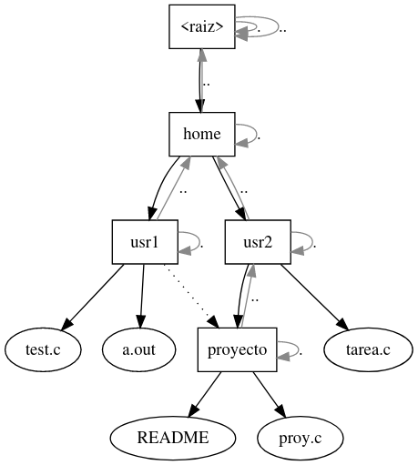
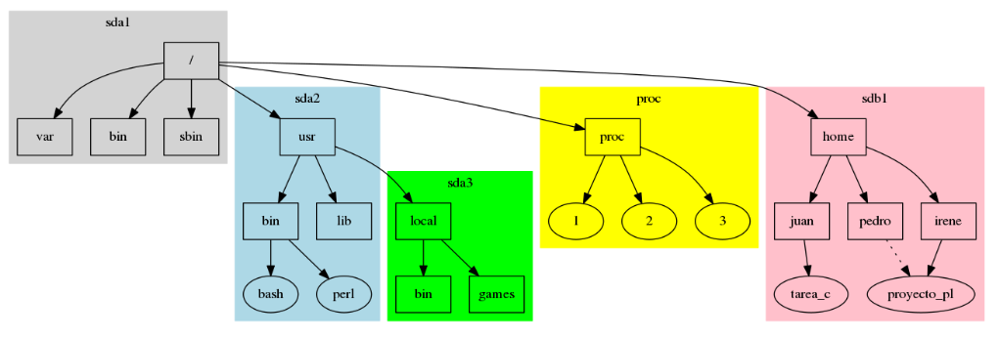
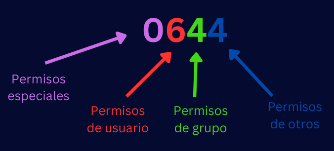
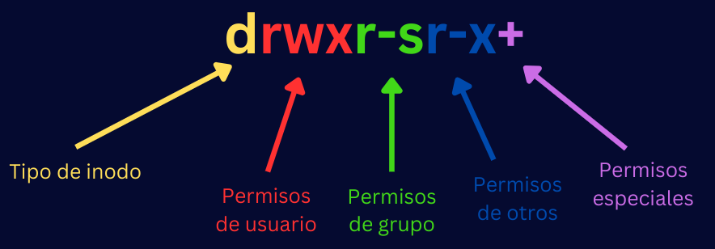
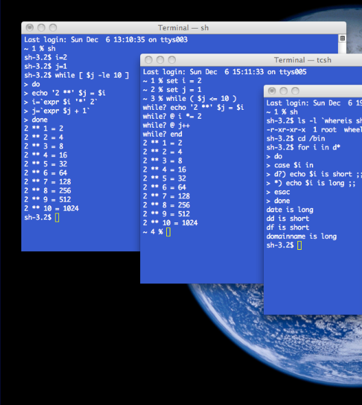
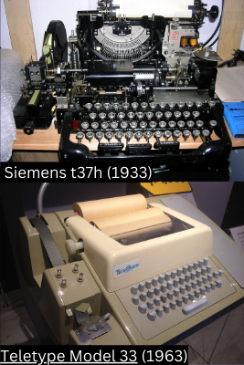
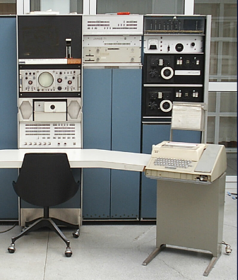
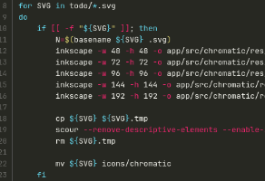

Introducción a Linux
PumaHat Cybersecurity Team
Instructores
Horario de clase
- Inicia
- 29 de julio de 2024
- Termina
- 2 de agosto de 2024
- Horario
Objetivos
El alumno adquirirá los conocimientos necesarios para desenvolverse en un entorno linux incluyendo la gestión de archivos y procesos, la utilización de comandos básicos, y la automatización de tareas mediante scripts de shell.
Temario
- Unix
- Sistemas de Archivos
- Sistemas de Paquetes
- Terminal
- Comandos de terminal
Unix
Generalidades
Caracteristicas
Historia
Unix
Sistemas de Archivos
Antecedentes
- Los primeros dispositivos no reconocían archivos, solo almacenaban conjuntos de datos:
- Analógicos: discos de vinilo, cintas de casette.
- En el nivel más bajo, los dispositivos digitales también almacenan solamente bytes.
¿Qué es un archivo?
Abstracción o TAD que el SO propone para un conjunto de bytes en un dispositivo.- El SO expone funciones al usuario para poder manipular el contenido de un archivo (o sea, los bytes asociados) sin preocuparse de cómo se guardan éstos en el dispositivo.
Operaciones sobre archivos
- Crear (create)
- Borrar (delete)
- Abrir (open)
- Cerrar (close)
- Leer (read)
- Escribir (write, flush)
- Reposicionar (seek)
Archivos de texto y binarios
Los "archivos de texto" son archivos binarios que solo contienen un subconjunto de bytes, los que representan caracteres imprimibles.- Tradicionalmente, el conjunto de caracteres imprimibles _ASCII_.
- Ahora, con la adopción de Unicode, cualquier caracter Unicode válido que no sea un caracter de control.
- Aunque depende del contexto.
Formato de archivo
Los datos dentro de un archivo pueden estar ordenados de mil formas distintas, y corresponde a quien los crea decidir el orden de los datos en un archivo.- El formato de un tipo de archivo específico puede estar reglamentado por un estándar o especificación.
Formatos libres y privativos
- Existen formatos cuya especificación es libre y otros cuya especificación no lo es.
- Existen formatos documentados, documentados a medias, y no documentados.
- Generalmente, los formatos libres están bien documentados.
¿Cómo determinar el tipo de un archivo?
-
Extensiones de archivo
- Implementados originalmente por CP/M
- Y, por consiguiente, MS/DOS y Windows
- Implementados originalmente por CP/M
-
Metadatos asociados a un archivo
- Mac OS y typecodes
- Números mágicos
- Forma seguida por los sistemas Unix
Hay que tener cuidado al hacer esto.
Sistemas de archivos
¿Qué son?
Los sistemas de archivos organizan archivos.- Algunos sistemas de archivos buscan redundancia, mayor rapidez, tolerancia a fallos o protección por cifrado.
-
Permiten guardar diversos datos sobre los archivos: "metadatos":
- Nombre, permisos, fechas (de acceso, de modificación), si son de alguna categoría especial, etc.
- Ruta de archivo: existente para prácticamente cualquier SO.
¿Cuáles existen?
- FAT
- FAT16
- FAT32
- exFAT
NTFS
- ext*
- ext2
- ext3
- ext4
- HFS
- HFS+
- UFS
- ZFS
- btrfs
- cdfs
- UDF (ISO 9600)
¿A qué se parece?
En general, la abstracción del sistema de archivos se parece a un archivero de oficina en la vida real.
La nomenclatura puede variar un poco, dependiendo del enfoque y del tipo de usuario final: directorios en Unix vs carpetas en Windows.
Sistemas de archivos virtuales
¿Qué son?
- La idea de sistema de archivos tiene más usos, y puede ser usada para exponer datos que no necesariamente están en un soporte.
- Los sistemas de archivos que funcionaban sobre datos en un soporte se categorizan ahora como 'sistemas de archivos de disco'.
- Sistemas de archivos de red: sshfs, nfs, ftp
- Sistemas de archivos de propósito especial: tmpfs, swap, lufs, devfs, sysfs
Ejemplos
- Las rutas de una URL tienen forma de ruta de archivo, pero no necesariamente tienen que ser archivos, por eso siempre hablamos de recursos.
- Filosofía Unix: todo es un archivo.
- Archivos especiales: pipas, dispositivos.
- FUSE: crea tu propio sistema de archivos.
Organización de archivos
Tipos de sistemas de archivos
- En un sistema de archivos generalmente queremos guardar muchos archivos.
- Existen varios tipos de sistemas de archivos, según la forma de organizar archivos:
- Sistemas planos
- A pesar de lo simple, aún se usan: Amazon S3
- Sistemas con etiquetas
- Sistemas de profundidad fija
- Sistemas con árbol de directorios
- Sistemas planos
Árbol de directorios
- El directorio es una estructura para agrupar archivos de forma jerárquica.
- Cada directorio está dentro de otro directorio, excepto el directorio raíz.
- Cada archivo o directorio (inodo) tiene una ruta de búsqueda que lo identifica.
- Por todo lo anterior, podemos representar al sistema de archivos como un grafo dirigido.
Árbol de directorios
- En muchos sistemas, cada directorio contiene dos directorios especiales:
- . -->> apunta a sí mismo
- .. -->> apunta al directorio padre
Excepto /gfdg, que apunta a si mismo
Descriptores de archivo
Ligaduras
Duras
Simbólicas
Accesos directos
Buffers
Montaje
¿Pueden existir dos sistemas de archivos al mismo tiempo?
- El sistema solo puede trabajar con un sistema de archivos a la vez, dado que solo hay un árbol de directorios.
- Esto es hacer que un sistema de archivos esté accesible desde una ubicación determinada.
- A esa ubicación le llamamos punto de montaje: un directorio dentro del sistema de archivos principal.
Archivo /etc/fstab
En el archivo /etc/fstab están listados los sistemas de archivos que el SO ya conoce, y sabe donde montar.
- Podemos montar cualquier tipo de sistema de archivos, sin importar su estructura subyacente, siempre y cuando haya algún controlador para dicho sistema.
- Eso incluye imágenes y archivos regulares.
- Unix tiene dos utilidades para administrar montajes:
- mount -->> monta sistemas de archivos.
- unmount -->> revierte esa operación.
mount -t ext4 -o ro,loop /tmp/imagen5.img /mnt/tmp/
Permisos unix
Propiedad
- Todos los archivos y directorios en un sistema Unix pertenecen a un usuario y grupo en específico.
- Solo el propietario de un archivo y el usuario root pueden cambiar estos permisos.
- Esto es parte del estándar POSIX.
chown, chgrp
Estos dos comandos nos permitirán modificar el usuario y grupo dueño de un archivo: chown y chgrp.
comando [-RL | -h] usuario|grupo objetivo
- Parámetros específicos:
- -R aplica recursivamente
- -L atraviesa enlaces simbólicos a directorios
- -h aplica la acción sobre el enlace simbólico, en vez de sobre el objeto apuntado
Permisos
Todos los archivos y directorios en un sistema Unix tienen 3 tipos de permisos básicos, que indican qué usuarios pueden operar con ellos, y cómo:
| Permiso | Archivos | Directorios |
| Lectura (r) | Leer el archivo | Listar archivos dentro del directorio (ls) |
| Escritura (w) | Escribir sobre el archivo | Modificar entradas del directorio: crear, renombrar y borrar archivos |
| Ejecución (x) | Ejecutar el archivo | Moverte al directorio (cd), o buscar dentro del directorio |
setuid y setgid
Existe forma de otorgar ciertos permisos ‘elevados’ a un usuario común cuando ejecuta un programa.
- Sobre ejecutables: otorga al usuario los permisos del dueño del ejecutable (setuid), o del grupo (setgid).
- Sobre directorios: setuid es ignorado, setgid obliga a que todos los archivos dentro del directorio tengan el mismo grupo dueño.
sticky
- Dos permisos diferentes, en realidad:
- Sobre ejecutables: hace que un ejecutable se quede residente en memoria principal.
- Sobre directorios: evita que un usuario modifique detalles sobre archivos que no posee.
- El uso sobre ejecutables ya no se implementa en casi ningún sistema Unix.
- Sí en UnixWare y HP-UX
chmod
El comando para modificar permisos en archivos es chmod.
chmod permisos objetivo
- Parámetros específicos:
- -R aplica recursivamente
- -L atraviesa enlaces simbólicos a directorios
- chmod no cambia permisos de enlaces simbólicos, puesto que éstos nunca se ocupan en el sistema.
Notación
Notación numérica o absoluta
Consiste en un número octal de tres dígitos, un dígito por agente.
Operaciones con chmod
Establecer permisos base con chmod es sencillo, ejemplos:
- chmod 644 archivo.txt
Establecer los bits setuid, setgid y sticky se hace anteponiendo un dígito octal que establece los tres permisos en el orden descrito:
- chmod 1644 archivo.txt
Notación simbólica
Consiste en una cadena de letras, donde cada letra especifica un permiso. Además, incluye otros datos.
- En la posición para indicar el permiso ejecutable, pueden haber otros caracteres, que depende de si los bits especiales están activos:
- Si setuid o setgid están activos: s o S, dependiendo de si el archivo es o no ejecutable
- Si sticky está activo, t o T, dependiendo de si el archivo es o no ejecutable
- Pueden aparecer estos símbolos al final:
- + si existen permisos adicionales
- - si existe un contexto SELinux
- @ si existen atributos de archivos extendidos
Operaciones con chmod
Añadir permisos:
- tipos+permisos
Quitar permisos:
- tipos-permisos
Establecer permisos:
- tipos=permisos
Tipo de inodo
- Regular (-)
- Directorio (d)
- Enlace simbólico (l)
- FIFO (p)
- De bloque (b)
- De caracter (c)
- Socket (s)
Sistemas de Paquetes
Introducción
- El sistema operativo no realiza funciones útiles para el usuario per se
- Se limita a gestionar los recursos del sistema…
- …y a proveer interfaces comunes para éstos.
- Necesita de sistemas para realizar tareas específicas para el usuario: aplicaciones
- Necesita de sistemas para administrar los sistemas anteriores, o realizar tareas de apoyo: utilidades.
Fig: GRUB: una especie de SO con solo una interfaz de línea de comandos
¿Sistemas o programas?
- Nótese que no hablamos de programas de aplicación, o programas de utilidades, sino de sistemas de aplicación y sistemas de utilidades.
- Hay qué notar la diferencia entre conceptos, será importante:
- Un programa es un conjunto de instrucciones: un ejecutable… o bibliotecas con código ejecutable.
- Un sistema puede ser un programa (generalmente lo es), pero no tiene por qué serlo.
- Ejemplos: packs de íconos, documentación.
Sistemas
- Un sistema se organiza generalmente en varios archivos, con distintas funcionalidades.
- Como mínimo, uno, aunque eso es algo raro.
- Ejecutables, bibliotecas, recursos multimedia de distintas clases.
- En cada sistema operativo existen formas distintas de organizar los archivos de los sistemas instalados.
- En los sistemas Unix, comúnmente se sigue el estándar Filesystem Hierarchy Standard.
Filesystem Hierarchy Standard (I)
- Estándar que especifica la estructura de los directorios en el sistema de archivos de un sistema Unix.
- Las distribuciones Linux popularizaron el estándar.
- La mayor parte de las distribuciones lo siguen, con cambios menores.
{kind=link}
- /: directorio raíz.
- /bin: ejecutables que deben estar disponibles en modo monousuario.
- /boot: archivos para el arranque.
- /dev: inodos de dispositivo.
- /etc: archivos de configuración.
- /home: directorios personales de usuarios.
- /lib: bibliotecas para los ejecutables en /bin.
- /lib<qual>: bibliotecas específicas para los ejecutables en /bin, en sistemas que soportan más de un formato ejecutable.
- /media: puntos de montaje para dispositivos removibles.
- /mnt: puntos de montaje.
- /opt: paquetes de aplicación variados.
- /proc: sistemas de archivos virtuales que exponen información sobre procesos y el kernel.
- /root: directorio personal del superusuario.
- /run: información sobre la sesión existente del sistema.
- /sbin: ejecutables para la administración del sistema.
- /srv: datos que el sistema puede servir.
- /sys: información sobre dispositivos y sus controladores.
- /tmp: archivos temporales.
- /usr: jerarquía secundaria: directorios para software de aplicación y de utilidad administrados por el administrador de paquetes.
- /usr/bin: ejecutables del software de aplicación y de utilidad.
- /usr/include: archivos de cabecera de C y C++.
- /usr/lib: análogo de /lib para ejecutables en /usr/bin.
- /usr/libexec: ejecutables que no están pensados.
- /usr/lib<qual>: análogo de /lib<qual> para ejecutables en /usr/bin.
- /usr/local: jerarquía terciaria: directorios para software de aplicación y de utilidad administrados por el administrador de sistema.
- /usr/sbin: análogo de /sbin.
- /usr/share: archivos de datos de aplicación.
- /usr/src: código fuente.
- /var: directorio para datos variables de una aplicación.
- /var/cache: archivos de caché.
- /var/lib: archivos de estados de programas.
- /var/lock: archivos de bloqueo, representan recursos en uso.
- /var/log: archivos de logs.
- /var/mail: correos electrónicos del usuario en espera de ser leídos.
- /var/spool: cola para tareas a procesar.
- /var/tmp: archivos temporales que no deben borrarse entre reinicios.
Configuracion de usuario
- Los directorios especificados por FSH en general solo son modificables por el sistema.
- Un no-superusuario no puede personalizar su propia configuración en estos directorios.
- Tradicionalmente, cada aplicación usaba un directorio oculto en el directorio de usuario.
- Esto llenaba muchas veces el directorio de usuario, y no había un orden dentro de cada directorio de aplicación.
XDG Base Directory Specification
- El proyecto Freedesktop.org propuso un estándar para especificar directorios para datos de un sistema específicos para un usuario:
- XDG_DATA_HOME ($HOME/.local/share): /usr/share
- XDG_CONFIG_HOME ($HOME/.config): /etc
- XDG_STATE_HOME ($HOME/.local/state): /var/lib
- XDG_CACHE_HOME ($HOME/.cache): /var/cache
- XDG_RUNTIME_DIR
- Y también para especificar directorios para los datos personales del usuario:
- XDG_DESKTOP_DIR ($HOME/Desktop)
- XDG_DOCUMENTS_DIR ($HOME/Documents)
- XDG_DOWNLOAD_DIR ($HOME/Downloads)
- XDG_MUSIC_DIR ($HOME/Music)
- XDG_PICTURES_DIR ($HOME/Pictures)
- XDG_PUBLICSHARE_DIR ($HOME/Public)
- XDG_TEMPLATES_DIR ($HOME/Templates)
- XDG_VIDEOS_DIR ($HOME/Videos)
Terminal (bash)
Shell
Una shell o intérprete de línea de comandos, es un programa que permite enviar comandos al sistema, normalmente, tanto de forma interactiva como por lotes.
Terminales
La primera forma de interactuar con una shell es mediante una terminal: interfaz de texto que permite introducir comandos y mostrar el resultado.
Tipos de terminales
Terminales de hardware
- Teletipos
- VDUs
Terminales de software
- Terminales de texto
- Emuladores de terminal
Terminales hardware
Teletipo
Las terminales actuales basan su funcionamiento en la forma en la que trabajan los teletipos: dispositivos para enviar mensajes.
Teletype Model 33
- Diseñado en 1963 por Teletype Corp.
- Bajo precio: fue muy popular entre las minicomputadoras.
- Fue de las primeras en usar (y popularizar) ASCII.
- Solo permitía mayúsculas, lo que influyó en la sintaxis de muchos lenguajes.
- BASIC fue diseñado específicamente para escribirse en este teletipo.
- Tomlinson usó el símbolo @ para las direcciones de correo por que estaba disponible en este teletipo.
Teletype Model 33
Terminales software
Terminal de texto
- En Unix, la terminal o consola de texto es el componente del sistema que nos permite interactuar con un shell.
- Prácticamente las terminales soportan caracteres comodín, tuberías, sintaxis HERE, substitución de comandos, variables, y estructuras de control para iteraciones y condicionales.
- Dado a que es un software, el sistema nos provee de varias terminales virtuales, accesibles desde /dev/ttyx
- Y desde C-M-<fx> (Ctrl-Alt-<Fx>)
Emulador de terminal
En entornos gráficos, también podemos mostrar una terminal dentro de una ventana gráfica. El programa que permite esto es el emulador de terminal.
Emuladores más populares
- Gnome Terminal
- kitty
- Konsole
- rxvt
- Windows Console
- Windows Terminal
- xterm y term
Tipos de shells
- Basadas en Bourne-shell
- Basadas en C-shell
Basadas en Bourne-shell
Creada en 1979 en los Bell Labs. Es la familia más popular hoy en día. Varios detalles, como el uso de $, fueron propuestos por éste.
- Alquimist shell (ash y dash)
- Bourne-again shell (bash)
- Korn shell (ksh)
- Z shell (zsh)
- Friendly-interactive shell (fish)
Basadas en C-shell
Creada en la Universidad de Berkeley, toma su sintaxis del lenguaje C.
La shell más utilizada es tcsh.
Bash
Generalidades
- Bash es el emulador de terminal del proyecto GNU.
- Creado por Brian Fox en 1989.
- Es la shell más popular en los sistemas Linux.
- Bash cumple todas las características descritas por POSIX, pero incluye muchas extensiones
- Cheatsheet de la sintaxis